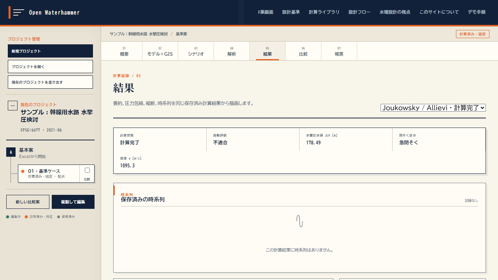

A02 Joukowsky / Allievi で水撃圧を求める
成果品様式①「計算結果」シートの中核。

| 項目 | 値 |
|---|---|
| 計算状態 | 計算完了 |
| 自動評価 | 不適合 |
| 水撃圧水頭 ΔH [m] | 178.49 |
| 閉そく区分 | 急閉そく |
| 波速 a [m/s] | 1095.3 |
閉そく区分は 2L/a と等価閉そく時間 tν の比で決まる。急閉そくならジューコフスキー式、緩閉そくならアリエビ式を適用する（技術書 §8.3.2）。
管路に許容圧力（呼び圧力）が入っていれば、設計水圧との判定がここで走る。判定結果は成果品様式①の「設計水圧／許容圧力／余裕度／判定」列に出力される。
話す一言：「同じ入力なら同じ由来情報ハッシュになります。再現性の担保はここです」